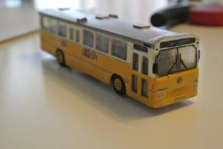
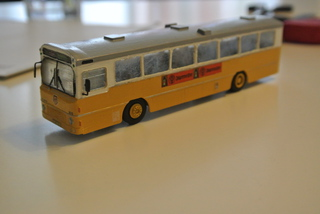
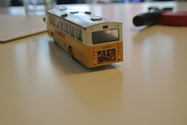
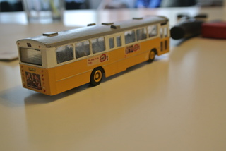

Nedenfor ses billeder af min Volvo B10M HT bus, på basis af Benny Søhaves 3D model fra Shapeways.
   
Den er blevet OK - men ikke perfekt. Især gav vinduerne problemer, de passede ikke 100% i overdelen og blev i starten tilpasset individuelt - det var dog en bedre løsning med et tyndt, gennemsigtig plast klistret i fra indersiden. Samtidig havde jeg desvære et uheld og fik knækket nogle af vinduesstolperne... De blev udbedret med plasticcard.
Decals er en blanding af hjemmelavede og decals fra Skilteskoven, hjul og spejle er snuppet fra en Herpa Volvo lastbil. Alt i alt er jeg OK tilfreds med den.